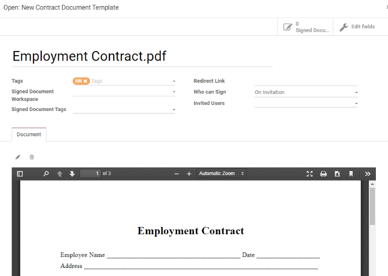

Contratos¶
Todos los empleados en Odoo deben tener un contrato para poder recibir su salario. Un contrato describe los términos del puesto de un empleado, su paga, sus horas de trabajo y otros detalles importantes sobre su puesto.
Importante
Los documentos de contrato (en formato PDF) se cargan y organizan con la aplicación Documentos y se firman a través de la aplicación Firma electrónica. Para poder realizar estas actividades debe tener las aplicaciones correspondientes instaladas, consulte la documentación sobre Documentos y Firma electrónica.
To view the employee contracts, go to the from the top menu. All employee contracts, and their current contract status, are displayed in a Kanban view, by default. The Kanban view displays running contracts, contracts that require action, expired contracts, and cancelled contracts.

Nota
La lista de contratos en la aplicación Nómina coincide con la lista de contratos en la aplicación Empleados.
Crear un nuevo contrato¶
In order for an employee to be paid, an active contract is required. If a new contract is needed, click the Create button on the Contracts dashboard. A contract form appears where the information can be entered. Required fields are underlined in bold.
New contract form¶

Referencia de contrato: escriba el nombre o el título del contrato, por ejemplo
Contrato de Juan Pérez. Este campo es obligatorio.Empleado: el nombre del empleado al que se aplica el contrato.
Contract Start Date: the date the contract starts. Choose a date by clicking on the drop-down menu, navigating to the correct month and year by using the (arrow) icons, then clicking on the desired date. This field is required.
Contract End Date: the date the contract ends. Choose a date by clicking on the drop-down menu, navigating to the correct month and year by using the (arrow) icons, then clicking on the desired date. This field is required.
Salary Structure Type: select one of the salary structure types from the drop-down menu. The default salary structure types are Employee or Worker. A new salary structure type can be created by typing the name in the field. This field is required.
Horario de trabajo: seleccione uno de los horarios de trabajo disponibles en el menú desplegable. Este campo es obligatorio.
Departamento: el departamento al que se aplica el contrato.
Puesto de trabajo: el puesto de trabajo específico al que se aplica el contrato.
Wage on Payroll: the amount to be paid to the employee each month.
Tipo de contrato: seleccione contrato indefinido, contrato de duración determinada o plan de formación e inserción laboral en el menú desplegable.
Un contrato indefinido tiene fecha de inicio, pero no de terminación laboral.
Un contrato de duración determinada tiene fechas de inicio y de terminación laboral específicas.
El plan de formación e inserción laboral es un contrato específico que se usa en Bélgica cuando se contrata a algún empleado que primero debe ser capacitado y solo cubre el período de formación.
Responsable de RR. HH.: si hay una persona específica en recursos humanos que es responsable del contrato, selecciónela en el menú desplegable. Este campo es obligatorio.
Truco
The Working Schedule drop-down menu displays all the working times for the selected Company. To modify or add to this list, go to , and either Create a new working time, or click on an existing working time, then edit it by clicking Edit.
Detalles del contrato¶
The Contract Details tab allows for the addition and editing of a contract, along with specifying which template to use when a new contract is created. These fields must be populated in order to create a new contract.
Importante
To access the various contract template fields in the Contract Details tab, the
Salary Configurator (hr_contract_salary) module must be installed.
When the Salary Configurator module is installed, the Salary Configurator - Holidays and Salary Configurator - Payroll modules install, as well.
Once the modules are installed, the database reverts to the main dashboard.

Analytic Account: this field allows a link between the contract and a specific analytic account for accounting purposes.
Plantilla de contrato: seleccione una plantilla de contrato preexistente desde el menú desplegable. Por lo general, las plantillas de contrato se crean mediante la aplicación Reclutamiento.
Plantilla de nuevo documento de contrato: seleccione un contrato en el menú desplegable, podrá modificarlo para este nuevo contrato de empleado.
Plantilla de documento de actualización de contrato: seleccione un contrato en el menú desplegable si el empleado tiene un contrato existente que necesita alguna actualización.
Notas: el campo de notas es un campo de texto donde puede escribir cualquier nota relacionada con el contrato del empleado, puede verlas en cualquier momento futuro.
Modificar plantillas de contrato¶
Click the (external Link) icon at the end of either the New Contract Document Template or Contract Update Document Template to open the corresponding contract template, and proceed to make any desired changes.

Aparecerá una ventana emergente con todos los detalles del contrato. Modifique los campos del contrato en caso de que sea necesario.
Etiquetas: seleccione todas las etiquetas relacionadas con el contrato.
Signed Document Workspace: this is where the signatures are stored. Choose a pre-configured workspace, or create a new one. To create a new Signed Document Workspace, type in the name of the workspace, then click either Create to add the new workspace, or Create and Edit to add the workspace and modify the workspace details.
Etiquetas de documentos firmados: seleccione o cree cualquier etiqueta que solo esté asociada con el contrato firmado, no con el contrato original que no tiene firmas.
Redirect Link: enter a redirect link for the employee to access the contract. A redirect link takes the user from one URL to another. In this case, it takes them to the newly-updated contract specifically written for them.
Quién puede firmar: seleccione todos los usuarios o por invitación.
Todos los usuarios: cualquier usuario que pertenezca a la empresa puede firmar el contrato.
Por invitación: solo los usuarios que seleccionó en este campo pueden firmar el contrato.
Usuarios invitados: seleccione a las personas que pueden firmar el documento.
Document: the attached document can be replaced by clicking the (pencil) icon. A pop-up window appears, so another document can be selected for upload. The file must be a PDF. To remove the document, click the (trash can) icon.
Una vez que haya terminado de realizar las modificaciones, haga clic en el botón Guardar. Toda la información de la plantilla de contrato que seleccionó completa los campos ubicados en la pestaña Información salarial, cualquier otra pestaña, como Documentos personales, aparece solo si corresponde.
Información salarial¶

This section is where the specific salary details are defined. This section is country-specific, so these fields vary, depending on where the company is located.
Enter the amount in the various fields, or tick a checkbox to apply a benefit. Some options that can be entered here include Group Insurance Sacrifice Rate and Canteen Cost, for example.
Some fields may be automatically filled in as other fields are entered. For example, the Yearly Cost (Real) and Monthly Cost (Real) updates once the Wage is populated.
Documentos personales¶
This tab only appears after an Employee is selected, and houses any documents that are linked to the employee on their employee record. Documents cannot be added to this tab, this tab only shows documents that are already uploaded and associated with the employee.
The available documents in this tab can be downloaded. Click the (download) icon next to the document to download it.
Guardar y enviar un contrato¶
Una vez que ha creado o modificado un contrato, guárdelo al hacer clic en el botón Guardar. Lo siguiente es enviar el contrato al empleado para que lo firme.
Haga clic en uno de los siguientes botones para enviar el contrato al empleado:

Generate Simulation Link: this option is only for Belgian companies. Clicking this opens a pop-up window that contains the basic information from the contract, as well as a link for the contract when using the salary configurator. Click Send to send an email to the employee, so they can sign the contract.

Nota
In order to send a contract using the Generate Simulation Link, there must be a signature field in the contract PDF being sent to the employee, so they can sign it.
Signature Request: clicking this reveals a pop-up window, where an email can be typed to the employee. Select the document (such as a contract, NDA, or Homeworking Policy) from the drop-down menu, and fill out the email section. Click Send when the email is ready to be sent.

Deducciones salariales¶
Las deducciones o asignaciones automáticas de un empleado, como los pagos de manutención alimenticia y los embargos salariales, se denominan deducciones salariales. En esta sección se establecen todas estas deducciones o asignaciones.
To add a new deduction, first navigate to . Next, click Create, and a new salary attachment form loads.

Complete los siguientes campos del formulario:
Employee: using the drop-down menu, select the employee the salary attachment applies to.
Description: enter a short description for the salary attachment, such as
Child Supportor529 Contribution.Type: using the drop-down menu, select the type of salary attachment being created. Choose from:
Deducción salarial: cualquier pago que se realiza para alguna cosa que es no es la pensión alimenticia. Por lo general suelen ser los embargos relacionados a pagos por acciones legales, pagos por impuestos adeudados, etc.
Asignación salarial: cualquier deducción que no es necesaria sino voluntaria, por ejemplo una asignación antes de impuestos a una cuenta de ahorros universitaria.
Child Support: any payments taken out specifically for child support.
Start Date: the date the salary attachment starts. Choose a date by clicking on the drop-down menu, navigating to the correct month and year by using the (arrow) icons, then clicking on the desired date. This field is required.
Estimated End Date: this field automatically populates after both the Monthly Amount and Total Amount fields are populated. This field is not modifiable.
Document: attach any documents relevant to the salary attachment. Click the Upload Your File button, navigate to the desired document in the file explorer, then click Open to select the document, and attach it to the form. To change the attached document, click the (pencil) icon, and select a different document. To remove a document, click the (trash can) icon.
Monthly Amount: enter the amount to be taken out of the employee’s paycheck every month for this specific salary attachment.
Total Amount: enter the total amount that the employee pays for the salary attachment to be completed.